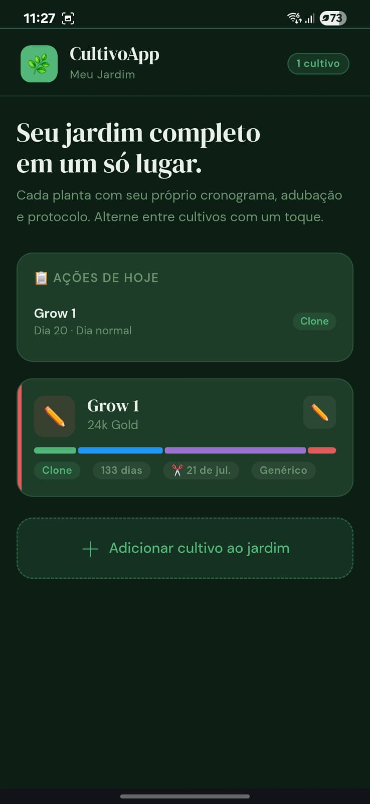
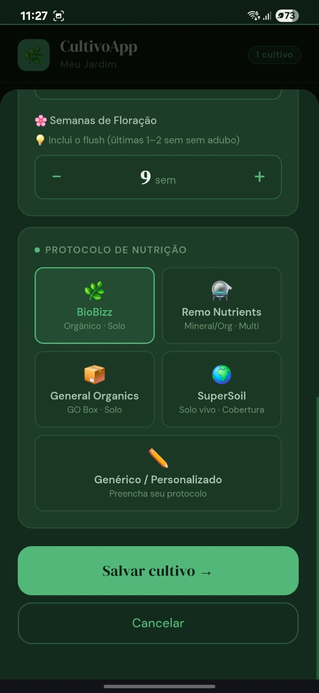
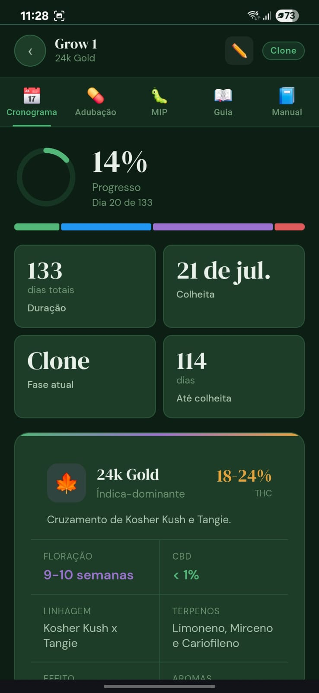
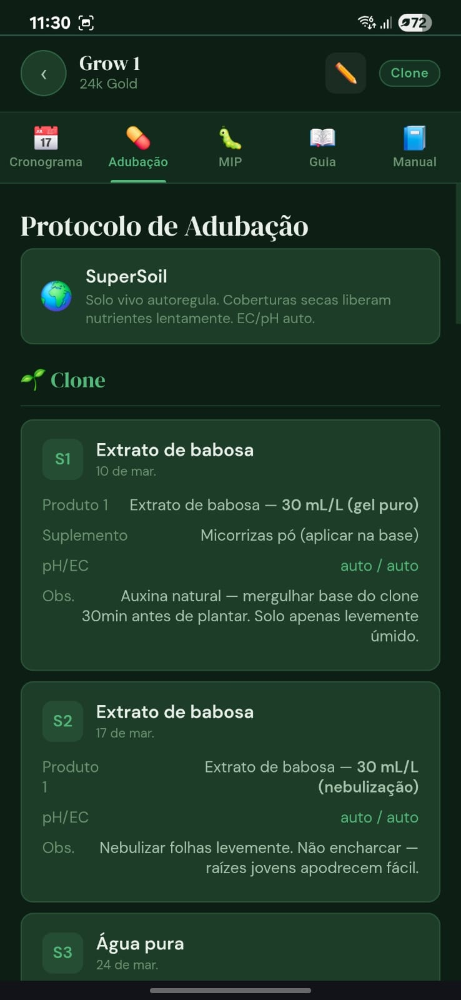
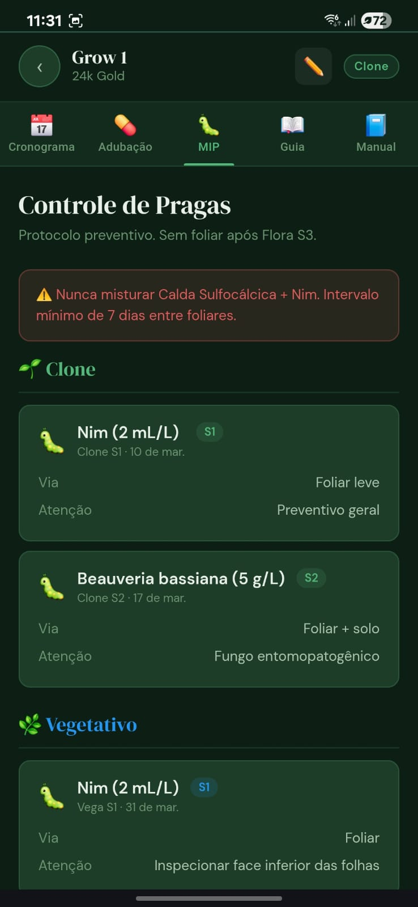
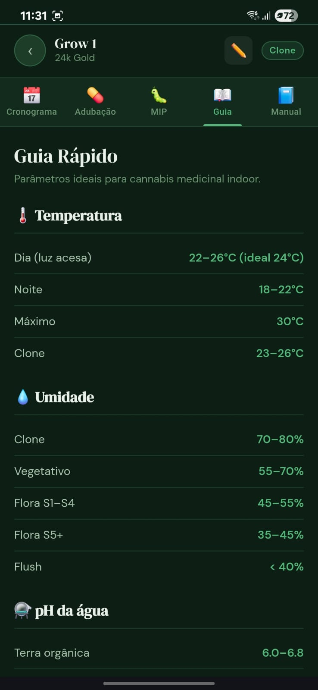
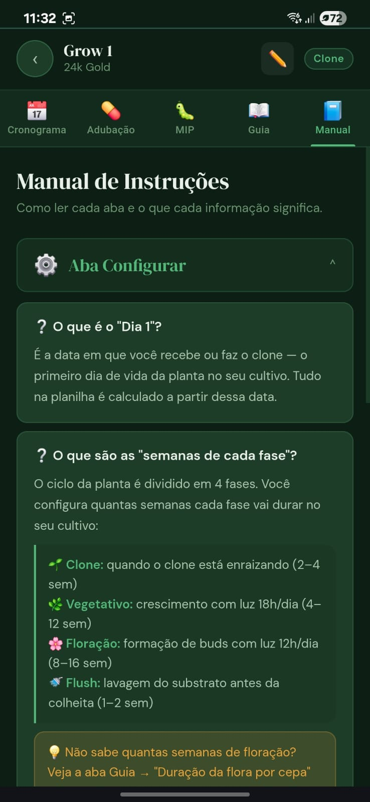

CultivoApp
Flor de Minas
O único app de gerenciamento de jardim medicinal em português. Cronograma automático, adubação semana a semana e MIP orgânico para pacientes em autocultivo.
Como Instalar (Opcional mas Recomendado)
O CultivoApp é uma PWA (Progressive Web App) — você pode usar direto no navegador sem precisar instalar nada. Mas ao adicionar à tela inicial, ele funciona como um app nativo, com acesso offline e tela cheia.
🍎 iPhone / iPad (Safari)
- Acesse portal-flordeminas.com.br e inscreva-se na lista de espera
- Toque no ícone Compartilhar (seta para cima)
- Role a lista e toque em "Adicionar à Tela de Início"
- Confirme com "Adicionar"
🤖 Android (Chrome)
- Abra a URL no Chrome
- Aparecerá um banner na tela: "Adicionar CultivoApp à tela inicial"
- Toque em "Instalar"
- Pronto — ícone aparece na sua tela inicial
Conhecendo o Jardim — Tela Inicial
Ao abrir o app, você encontra a tela "Meu Jardim" — o painel central onde todos os seus cultivos ficam organizados.
O que você vê:
- AÇÕES DE HOJE — painel que mostra o que cada planta precisa no dia de hoje
- Card de cada cultivo — nome, cepa, fase atual, dias totais e protocolo de nutrição
- Barra colorida — visualização proporcional de todas as fases do ciclo (🟢 Clone · 🔵 Vegetativo · 🟣 Floração · 🔴 Flush)
- Botão "＋ Adicionar cultivo" — para registrar um novo ciclo

Criando seu Primeiro Cultivo
Toque em "＋ Adicionar cultivo ao jardim". Uma janela surgirá na parte inferior da tela. Preencha os campos:
| Campo | O que é | Exemplo |
|---|---|---|
| 🏷️ Nome | Apelido do cultivo | "Tent A" |
| 🌿 Strain | Genética da planta | "Amnesia Haze" |
| 🎨 Cor | Cor do card no jardim | Verde, Azul, Roxo… |
| 📅 Dia 1 | Data que recebeu o clone | 2026-03-25 |
| 🌱 Clone | Semanas de enraizamento | 2 semanas |
| 🌿 Vegetativo | Semanas com 18h/dia | 6 semanas |
| 🌸 Floração | Semanas com 12h/dia | 9 semanas |
| 💊 Protocolo | Linha de nutrição usada | BioBizz |
Toque em "Salvar cultivo →" para confirmar.

Aba Cronograma 📅
Toque em qualquer card do jardim para abrir o detalhe do cultivo. A primeira aba é o Cronograma.
- Anel de progresso — % de conclusão do ciclo total
- Dia atual — ex: "Dia 3 de 126"
- Duração total em dias
- Data de colheita estimada — calculada automaticamente!
- Fase atual — Clone / Vegetativo / Floração / Flush
- Dias até a colheita
- Card da Cepa — THC, CBD, terpenos, linhagem e efeitos

Aba Adubação 💊
A aba Adubação mostra o protocolo de nutrição escolhido, semana a semana, com produtos e doses exatas.
- Nome do protocolo com pH e EC ideais para o sistema (ex: BioBizz — pH 6.2-6.5)
- Cada semana é um card com: produto, dose em mL/L, pH/EC e observação técnica
- Agrupado por fase — Clone → Vegetativo → Floração → Flush
Protocolos disponíveis:
| Protocolo | Tipo | Substrato |
|---|---|---|
| 🌿 BioBizz | Orgânico certificado | Solo |
| ⚗️ Remo Nutrients | Mineral/Orgânico | Multi |
| 📦 General Organics | GO Box | Solo |
| 🌍 SuperSoil | Solo vivo | Cobertura |
| ✏️ Genérico | Personalizado | Qualquer |

Aba MIP — Controle de Pragas 🐛
A aba MIP (Manejo Integrado de Pragas) traz o protocolo preventivo orgânico, indica quando aplicar cada defensivo e como.
- Banner de alerta — avisos de segurança críticos (ex: "Nunca misturar Calda Sulfocálcica + Nim")
- Cronograma preventivo por fase — aplicações programadas semana a semana
- Para cada aplicação: produto, dose, via (foliar/solo) e observação
Defensivos incluídos (padrão):
| Produto | Fase | Dose | Via |
|---|---|---|---|
| Nim (Neem) | Clone e Vega | 2 mL/L | Foliar |
| Beauveria bassiana | Clone e Vega | 5 g/L | Foliar + Solo |
| Calda Sulfocálcica | Vega tardio | Rotacional | Foliar |

Aba Guia — Parâmetros Ideais 📖
A aba Guia é uma tabela de referência rápida com todos os parâmetros ideais para cannabis medicinal indoor.
| Parâmetro | Clone | Vegetativo | Flora S5+ |
|---|---|---|---|
| Temperatura (dia) | 23-26°C | 22-26°C | 22-26°C |
| Umidade | 70-80% | 55-70% | 35-45% |
| pH (terra orgânica) | 6.0-6.8 | 6.0-6.8 | 6.0-6.5 |
| pH (coco coir) | 5.8-6.2 | 5.8-6.2 | 5.8-6.0 |

Aba Manual de Instruções 📘
O CultivoApp é intuitivo, mas pode conter termos técnicos novos para produtores iniciantes. A aba Manual resolve isso sendo a documentação embutida do app.
- Conceitos básicos — explicação clara sobre o que significa cada campo, como o "Dia 1"
- Definição das fases — duração e objetivo de cada fase de transição (Clone, Vegetativo, Floração, Flush)
- FAQ integrado — aprenda como preencher e ler as informações de tela sem sair do aplicativo

Fluxo Completo de Uso
Do primeiro acesso ao monitoramento diário do seu jardim medicinal.
Entre na Lista de Espera
O CultivoApp está em fase final de desenvolvimento. Cadastre seu e-mail e seja notificado no lançamento — com acesso antecipado e conteúdo exclusivo.